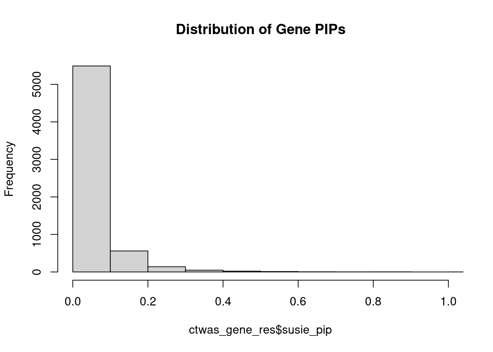
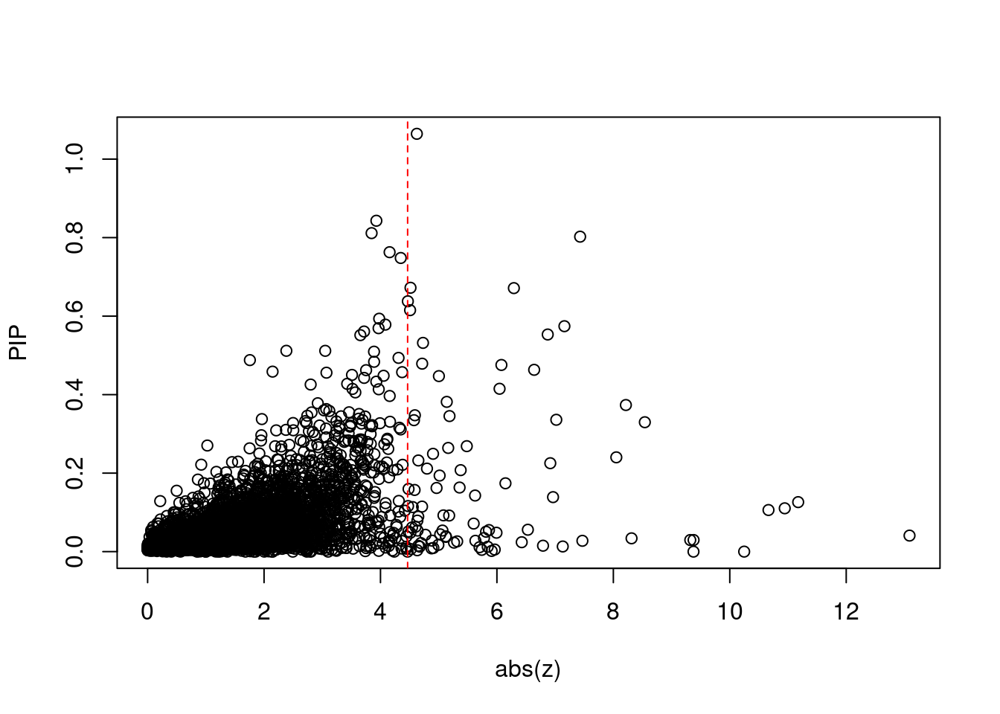
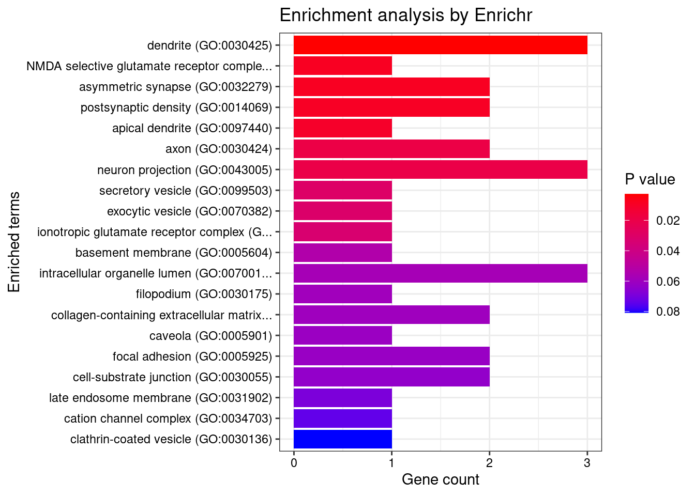
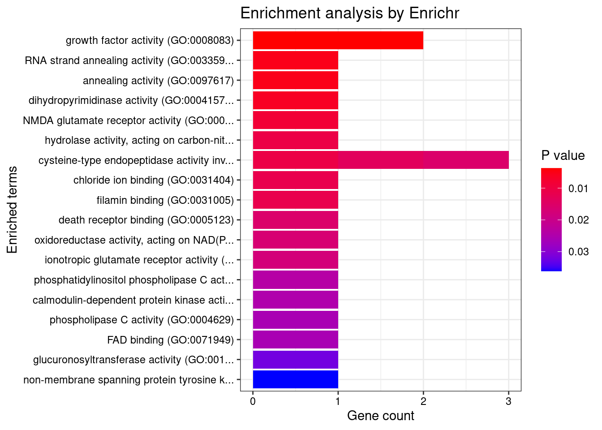

SCZ 2018 - Brain_Substantia_nigra
sheng Qian
2021-2-6
Last updated: 2022-05-19
Checks: 5 2
Knit directory: cTWAS_analysis/
This reproducible R Markdown analysis was created with workflowr (version 1.7.0). The Checks tab describes the reproducibility checks that were applied when the results were created. The Past versions tab lists the development history.
The R Markdown file has unstaged changes. To know which version of the R Markdown file created these results, you’ll want to first commit it to the Git repo. If you’re still working on the analysis, you can ignore this warning. When you’re finished, you can run wflow_publish to commit the R Markdown file and build the HTML.
Great job! The global environment was empty. Objects defined in the global environment can affect the analysis in your R Markdown file in unknown ways. For reproduciblity it’s best to always run the code in an empty environment.
The command set.seed(20211220) was run prior to running the code in the R Markdown file. Setting a seed ensures that any results that rely on randomness, e.g. subsampling or permutations, are reproducible.
Great job! Recording the operating system, R version, and package versions is critical for reproducibility.
Nice! There were no cached chunks for this analysis, so you can be confident that you successfully produced the results during this run.
Using absolute paths to the files within your workflowr project makes it difficult for you and others to run your code on a different machine. Change the absolute path(s) below to the suggested relative path(s) to make your code more reproducible.
| absolute | relative |
|---|---|
| /project2/xinhe/shengqian/cTWAS/cTWAS_analysis/data/ | data |
| /project2/xinhe/shengqian/cTWAS/cTWAS_analysis/code/ctwas_config.R | code/ctwas_config.R |
Great! You are using Git for version control. Tracking code development and connecting the code version to the results is critical for reproducibility.
The results in this page were generated with repository version be614ed. See the Past versions tab to see a history of the changes made to the R Markdown and HTML files.
Note that you need to be careful to ensure that all relevant files for the analysis have been committed to Git prior to generating the results (you can use wflow_publish or wflow_git_commit). workflowr only checks the R Markdown file, but you know if there are other scripts or data files that it depends on. Below is the status of the Git repository when the results were generated:
Ignored files:
Ignored: .Rhistory
Ignored: .ipynb_checkpoints/
Untracked files:
Untracked: G_list.RData
Untracked: Rplot.png
Untracked: SCZ_annotation.xlsx
Untracked: analysis/.ipynb_checkpoints/
Untracked: code/.ipynb_checkpoints/
Untracked: code/AF_out/
Untracked: code/Autism_out/
Untracked: code/BMI_S_out/
Untracked: code/BMI_out/
Untracked: code/Glucose_out/
Untracked: code/LDL_S_out/
Untracked: code/SCZ_2014_EUR_out/
Untracked: code/SCZ_2018_S_out/
Untracked: code/SCZ_2018_out/
Untracked: code/SCZ_2020_Single_out/
Untracked: code/SCZ_2020_out/
Untracked: code/SCZ_S_out/
Untracked: code/SCZ_out/
Untracked: code/T2D_out/
Untracked: code/ctwas_config.R
Untracked: code/mapping.R
Untracked: code/out/
Untracked: code/process_scz_2018_snps.R
Untracked: code/run_AF_analysis.sbatch
Untracked: code/run_AF_analysis.sh
Untracked: code/run_AF_ctwas_rss_LDR.R
Untracked: code/run_Autism_analysis.sbatch
Untracked: code/run_Autism_analysis.sh
Untracked: code/run_Autism_ctwas_rss_LDR.R
Untracked: code/run_BMI_analysis.sbatch
Untracked: code/run_BMI_analysis.sh
Untracked: code/run_BMI_analysis_S.sbatch
Untracked: code/run_BMI_analysis_S.sh
Untracked: code/run_BMI_ctwas_rss_LDR.R
Untracked: code/run_BMI_ctwas_rss_LDR_S.R
Untracked: code/run_Glucose_analysis.sbatch
Untracked: code/run_Glucose_analysis.sh
Untracked: code/run_Glucose_ctwas_rss_LDR.R
Untracked: code/run_LDL_analysis_S.sbatch
Untracked: code/run_LDL_analysis_S.sh
Untracked: code/run_LDL_ctwas_rss_LDR_S.R
Untracked: code/run_SCZ_2014_EUR_analysis.sbatch
Untracked: code/run_SCZ_2014_EUR_analysis.sh
Untracked: code/run_SCZ_2014_EUR_ctwas_rss_LDR.R
Untracked: code/run_SCZ_2018_analysis.sbatch
Untracked: code/run_SCZ_2018_analysis.sh
Untracked: code/run_SCZ_2018_analysis_S.sbatch
Untracked: code/run_SCZ_2018_analysis_S.sh
Untracked: code/run_SCZ_2018_ctwas_rss_LDR.R
Untracked: code/run_SCZ_2018_ctwas_rss_LDR_S.R
Untracked: code/run_SCZ_2020_Single_analysis.sbatch
Untracked: code/run_SCZ_2020_Single_analysis.sh
Untracked: code/run_SCZ_2020_Single_ctwas_rss_LDR.R
Untracked: code/run_SCZ_2020_analysis.sbatch
Untracked: code/run_SCZ_2020_analysis.sh
Untracked: code/run_SCZ_2020_ctwas_rss_LDR.R
Untracked: code/run_SCZ_analysis.sbatch
Untracked: code/run_SCZ_analysis.sh
Untracked: code/run_SCZ_analysis_S.sbatch
Untracked: code/run_SCZ_analysis_S.sh
Untracked: code/run_SCZ_ctwas_rss_LDR.R
Untracked: code/run_SCZ_ctwas_rss_LDR_S.R
Untracked: code/run_T2D_analysis.sbatch
Untracked: code/run_T2D_analysis.sh
Untracked: code/run_T2D_ctwas_rss_LDR.R
Untracked: code/wflow_build.R
Untracked: code/wflow_build.sbatch
Untracked: data/.ipynb_checkpoints/
Untracked: data/GO_Terms/
Untracked: data/PGC3_SCZ_wave3_public.v2.tsv
Untracked: data/SCZ/
Untracked: data/SCZ_2014_EUR/
Untracked: data/SCZ_2018/
Untracked: data/SCZ_2018_S/
Untracked: data/SCZ_2020/
Untracked: data/SCZ_S/
Untracked: data/Supplementary Table 15 - MAGMA.xlsx
Untracked: data/Supplementary Table 20 - Prioritised Genes.xlsx
Untracked: data/T2D/
Untracked: data/UKBB/
Untracked: data/UKBB_SNPs_Info.text
Untracked: data/gene_OMIM.txt
Untracked: data/gene_pip_0.8.txt
Untracked: data/mashr_Heart_Atrial_Appendage.db
Untracked: data/mashr_sqtl/
Untracked: data/scz_2018.RDS
Untracked: data/summary_known_genes_annotations.xlsx
Untracked: data/untitled.txt
Untracked: top_genes_32.txt
Untracked: top_genes_37.txt
Untracked: top_genes_43.txt
Untracked: top_genes_54.txt
Untracked: top_genes_81.txt
Untracked: z_snp_pos_SCZ.RData
Untracked: z_snp_pos_SCZ_2014_EUR.RData
Untracked: z_snp_pos_SCZ_2018.RData
Untracked: z_snp_pos_SCZ_2020.RData
Unstaged changes:
Deleted: analysis/BMI_S_results.Rmd
Modified: analysis/SCZ_2018_Brain_Amygdala_S.Rmd
Modified: analysis/SCZ_2018_Brain_Anterior_cingulate_cortex_BA24_S.Rmd
Modified: analysis/SCZ_2018_Brain_Caudate_basal_ganglia_S.Rmd
Modified: analysis/SCZ_2018_Brain_Cerebellar_Hemisphere_S.Rmd
Modified: analysis/SCZ_2018_Brain_Cerebellum_S.Rmd
Modified: analysis/SCZ_2018_Brain_Cortex_S.Rmd
Modified: analysis/SCZ_2018_Brain_Frontal_Cortex_BA9_S.Rmd
Modified: analysis/SCZ_2018_Brain_Hippocampus_S.Rmd
Modified: analysis/SCZ_2018_Brain_Hypothalamus_S.Rmd
Modified: analysis/SCZ_2018_Brain_Nucleus_accumbens_basal_ganglia_S.Rmd
Modified: analysis/SCZ_2018_Brain_Putamen_basal_ganglia_S.Rmd
Modified: analysis/SCZ_2018_Brain_Spinal_cord_cervical_c-1_S.Rmd
Modified: analysis/SCZ_2018_Brain_Substantia_nigra_S.Rmd
Modified: analysis/ttt.Rmd
Note that any generated files, e.g. HTML, png, CSS, etc., are not included in this status report because it is ok for generated content to have uncommitted changes.
These are the previous versions of the repository in which changes were made to the R Markdown (analysis/SCZ_2018_Brain_Substantia_nigra_S.Rmd) and HTML (docs/SCZ_2018_Brain_Substantia_nigra_S.html) files. If you’ve configured a remote Git repository (see ?wflow_git_remote), click on the hyperlinks in the table below to view the files as they were in that past version.
| File | Version | Author | Date | Message |
|---|---|---|---|---|
| Rmd | be614ed | sq-96 | 2022-05-19 | update |
| html | be614ed | sq-96 | 2022-05-19 | update |
| Rmd | 7d08c9b | sq-96 | 2022-05-18 | update |
| html | 7d08c9b | sq-96 | 2022-05-18 | update |
| Rmd | 2749be9 | sq-96 | 2022-05-12 | update |
| html | 2749be9 | sq-96 | 2022-05-12 | update |
| html | 011327d | sq-96 | 2022-05-12 | update |
| Rmd | 6c6abbd | sq-96 | 2022-05-12 | update |
library(reticulate)
use_python("/scratch/midway2/shengqian/miniconda3/envs/PythonForR/bin/python",required=T)Weight QC
#number of imputed weights
nrow(qclist_all)[1] 15170#number of imputed weights by chromosome
table(qclist_all$chr)
1 2 3 4 5 6 7 8 9 10 11 12 13 14 15 16
1400 1082 880 623 588 770 877 489 649 714 913 791 301 549 531 626
17 18 19 20 21 22
1040 214 1116 542 34 441 #number of imputed weights without missing variants
sum(qclist_all$nmiss==0)[1] 13605#proportion of imputed weights without missing variants
mean(qclist_all$nmiss==0)[1] 0.8968INFO:numexpr.utils:Note: NumExpr detected 56 cores but "NUMEXPR_MAX_THREADS" not set, so enforcing safe limit of 8.finish
Attaching package: 'dplyr'The following objects are masked from 'package:stats':
filter, lagThe following objects are masked from 'package:base':
intersect, setdiff, setequal, unionCheck convergence of parameters
| Version | Author | Date |
|---|---|---|
| 2749be9 | sq-96 | 2022-05-12 |
gene snp
0.0065597 0.0003205 gene snp
9.522 10.339 [1] 105318[1] 6278 6309950 gene snp
0.003723 0.198505 [1] 0.005031 1.088938Genes with highest PIPs

genename region_tag susie_pip mu2 PVE z num_intron num_sqtl
1685 DPYSL3 5_86 0.7628 23.36 1.291e-04 4.157 1 1
619 BDNF 11_19 0.7481 22.63 1.203e-04 4.348 1 1
5949 VPS41 7_28 0.5915 25.12 8.533e-05 -4.509 2 2
2308 GON4L 1_76 0.5783 27.63 8.773e-05 4.084 1 1
3192 MDK 11_28 0.5743 45.88 1.437e-04 7.159 1 1
241 AKT3 1_128 0.5675 34.01 1.146e-04 -6.291 6 6
4280 PTK2B 8_27 0.5262 26.09 6.880e-05 4.730 2 3
905 CASP2 7_89 0.5094 21.33 5.255e-05 -3.889 1 1
564 B3GAT1 11_84 0.4936 31.39 9.343e-05 -4.516 6 10
5880 UQCRC2 16_19 0.4789 22.53 4.905e-05 4.716 1 1
1513 DBF4B 17_26 0.4679 21.91 4.589e-05 -3.890 2 2
3022 LRP8 1_33 0.4353 32.61 1.042e-04 -4.624 6 6
1361 CRTAP 3_24 0.4343 20.01 6.921e-05 3.929 2 2
1067 CECR2 22_2 0.4330 20.33 3.620e-05 3.928 1 1
5465 THAP8 19_25 0.4107 20.21 6.381e-05 3.847 2 2
523 ATP2B2 3_8 0.3965 32.48 4.850e-05 4.158 1 1
3861 PBXIP1 1_76 0.3474 24.41 2.797e-05 -4.591 1 1
919 CBWD1 9_1 0.3442 22.78 2.562e-05 3.736 1 1
380 APOPT1 14_54 0.3413 44.24 1.124e-04 7.429 6 9
5564 TMEM219 16_24 0.3359 45.65 4.891e-05 -7.020 1 1Genes with highest PVE
genename region_tag susie_pip mu2 PVE z num_intron num_sqtl
3192 MDK 11_28 0.5743 45.88 1.437e-04 7.159 1 1
1685 DPYSL3 5_86 0.7628 23.36 1.291e-04 4.157 1 1
619 BDNF 11_19 0.7481 22.63 1.203e-04 4.348 1 1
241 AKT3 1_128 0.5675 34.01 1.146e-04 -6.291 6 6
380 APOPT1 14_54 0.3413 44.24 1.124e-04 7.429 6 9
3022 LRP8 1_33 0.4353 32.61 1.042e-04 -4.624 6 6
564 B3GAT1 11_84 0.4936 31.39 9.343e-05 -4.516 6 10
2308 GON4L 1_76 0.5783 27.63 8.773e-05 4.084 1 1
5949 VPS41 7_28 0.5915 25.12 8.533e-05 -4.509 2 2
1361 CRTAP 3_24 0.4343 20.01 6.921e-05 3.929 2 2
4280 PTK2B 8_27 0.5262 26.09 6.880e-05 4.730 2 3
5465 THAP8 19_25 0.4107 20.21 6.381e-05 3.847 2 2
905 CASP2 7_89 0.5094 21.33 5.255e-05 -3.889 1 1
5880 UQCRC2 16_19 0.4789 22.53 4.905e-05 4.716 1 1
5564 TMEM219 16_24 0.3359 45.65 4.891e-05 -7.020 1 1
2166 FXR1 3_111 0.2203 42.91 4.863e-05 -6.873 4 4
523 ATP2B2 3_8 0.3965 32.48 4.850e-05 4.158 1 1
1513 DBF4B 17_26 0.4679 21.91 4.589e-05 -3.890 2 2
4024 PLCB2 15_14 0.3091 24.42 4.023e-05 4.470 3 4
3706 NT5C2 10_66 0.2890 46.96 3.989e-05 -8.541 8 11Comparing z scores and PIPs

[1] 0.01434 genename region_tag susie_pip mu2 PVE z num_intron
3948 PGBD1 6_22 2.685e-02 155.68 6.492e-07 -13.087 2
1537 DDR1 6_25 5.752e-02 100.79 6.737e-06 11.175 3
2118 FLOT1 6_24 2.330e-02 77.49 1.883e-06 -10.944 5
692 BTN3A2 6_20 5.101e-02 88.48 2.308e-06 -10.665 4
574 BAG6 6_26 2.117e-05 160.21 9.162e-13 -10.247 5
984 CCHCR1 6_25 9.344e-03 62.23 1.192e-07 -9.378 5
2347 GPSM3 6_26 1.690e-06 118.03 3.202e-15 -9.377 1
6126 ZKSCAN3 6_22 1.027e-02 55.20 6.722e-08 -9.321 3
3706 NT5C2 10_66 2.890e-01 46.96 3.989e-05 -8.541 8
4651 RP5-874C20.8 6_22 9.524e-03 45.29 8.981e-08 -8.313 4
3090 MAD1L1 7_3 1.916e-01 62.14 2.905e-05 8.215 4
463 AS3MT 10_66 2.347e-01 44.47 2.347e-05 8.051 3
6270 ZSCAN16 6_22 1.249e-02 52.38 1.093e-07 7.468 3
380 APOPT1 14_54 3.413e-01 44.24 1.124e-04 7.429 6
3192 MDK 11_28 5.743e-01 45.88 1.437e-04 7.159 1
209 AIF1 6_26 6.555e-03 59.25 4.835e-08 -7.131 5
5564 TMEM219 16_24 3.359e-01 45.65 4.891e-05 -7.020 1
1581 DGKZ 11_28 1.388e-01 43.55 7.970e-06 -6.964 1
2643 INO80E 16_24 1.831e-01 44.02 1.567e-05 -6.917 4
2166 FXR1 3_111 2.203e-01 42.91 4.863e-05 -6.873 4
num_sqtl
3948 2
1537 3
2118 5
692 4
574 7
984 8
2347 1
6126 3
3706 11
4651 5
3090 6
463 3
6270 3
380 9
3192 1
209 5
5564 1
1581 2
2643 5
2166 4GO enrichment analysis for genes with PIP>0.5
#number of genes for gene set enrichment
length(genes)[1] 8Uploading data to Enrichr... Done.
Querying GO_Biological_Process_2021... Done.
Querying GO_Cellular_Component_2021... Done.
Querying GO_Molecular_Function_2021... Done.
Parsing results... Done.
[1] "GO_Biological_Process_2021"
Term
1 positive regulation of neuron projection development (GO:0010976)
2 positive regulation of cell projection organization (GO:0031346)
3 regulation of neuron projection development (GO:0010975)
4 negative regulation of neuron apoptotic process (GO:0043524)
5 regulation of neuron apoptotic process (GO:0043523)
6 negative regulation of neuron death (GO:1901215)
7 positive regulation of vascular endothelial cell proliferation (GO:1905564)
8 regulation of vascular endothelial cell proliferation (GO:1905562)
9 negative regulation of apoptotic process (GO:0043066)
10 regulation of leukocyte chemotaxis (GO:0002688)
11 regulation of macrophage chemotaxis (GO:0010758)
12 negative regulation of ossification (GO:0030279)
13 regulation of actin cytoskeleton reorganization (GO:2000249)
14 positive regulation of cell-substrate adhesion (GO:0010811)
15 positive regulation of endothelial cell proliferation (GO:0001938)
16 regulation of cell migration (GO:0030334)
17 positive regulation of endothelial cell migration (GO:0010595)
18 regulation of actin cytoskeleton organization (GO:0032956)
19 positive regulation of epithelial cell proliferation (GO:0050679)
20 regulation of cell adhesion (GO:0030155)
21 enzyme linked receptor protein signaling pathway (GO:0007167)
22 regulation of cell differentiation (GO:0045595)
23 positive regulation of neutrophil extravasation (GO:2000391)
24 late endosome to lysosome transport (GO:1902774)
25 regulation of inflammatory response to wounding (GO:0106014)
26 regulation of inositol trisphosphate biosynthetic process (GO:0032960)
27 endothelin receptor signaling pathway (GO:0086100)
28 negative regulation of regulatory T cell differentiation (GO:0045590)
29 activation of Janus kinase activity (GO:0042976)
30 positive regulation of non-membrane spanning protein tyrosine kinase activity (GO:1903997)
31 negative regulation of cardiac muscle cell apoptotic process (GO:0010667)
32 leukocyte chemotaxis involved in inflammatory response (GO:0002232)
33 regulation of hepatocyte proliferation (GO:2000345)
34 positive regulation of receptor binding (GO:1900122)
35 regulation of neutrophil extravasation (GO:2000389)
36 regulation of inositol phosphate biosynthetic process (GO:0010919)
37 marginal zone B cell differentiation (GO:0002315)
38 regulation of bone remodeling (GO:0046850)
39 nucleobase catabolic process (GO:0046113)
40 regulation of non-membrane spanning protein tyrosine kinase activity (GO:1903995)
41 negative regulation of striated muscle cell apoptotic process (GO:0010664)
42 positive regulation of oligodendrocyte differentiation (GO:0048714)
43 pyrimidine nucleobase catabolic process (GO:0006208)
44 regulation of collateral sprouting (GO:0048670)
45 endosomal vesicle fusion (GO:0034058)
46 positive regulation of cell motility (GO:2000147)
47 apoptotic process (GO:0006915)
48 bone resorption (GO:0045453)
49 ionotropic glutamate receptor signaling pathway (GO:0035235)
50 regulation of receptor binding (GO:1900120)
51 adrenal gland development (GO:0030325)
52 nerve growth factor signaling pathway (GO:0038180)
53 regulation of macrophage migration (GO:1905521)
54 regulation of epithelial cell apoptotic process (GO:1904035)
55 positive regulation of signal transduction (GO:0009967)
56 cellular response to interleukin-2 (GO:0071352)
57 positive regulation of cellular extravasation (GO:0002693)
58 regulation of cardiac muscle cell apoptotic process (GO:0010665)
59 positive regulation of keratinocyte proliferation (GO:0010838)
60 interleukin-2-mediated signaling pathway (GO:0038110)
61 cellular component assembly (GO:0022607)
62 positive regulation of cell migration (GO:0030335)
63 actin crosslink formation (GO:0051764)
64 regulation of sequestering of calcium ion (GO:0051282)
65 pyrimidine nucleobase metabolic process (GO:0006206)
66 regulation of leukocyte cell-cell adhesion (GO:1903037)
67 mitochondrial genome maintenance (GO:0000002)
68 positive regulation of neuron migration (GO:2001224)
69 negative regulation of cellular senescence (GO:2000773)
70 regulation of leukocyte adhesion to vascular endothelial cell (GO:1904994)
71 mature B cell differentiation involved in immune response (GO:0002313)
72 negative regulation of myotube differentiation (GO:0010832)
73 negative regulation of potassium ion transport (GO:0043267)
74 negative regulation of bone mineralization (GO:0030502)
75 negative regulation of T cell differentiation (GO:0045581)
76 positive regulation of macrophage chemotaxis (GO:0010759)
77 neurotrophin TRK receptor signaling pathway (GO:0048011)
78 peptidyl-tyrosine autophosphorylation (GO:0038083)
79 oogenesis (GO:0048477)
80 positive regulation of leukocyte adhesion to vascular endothelial cell (GO:1904996)
81 regulation of establishment of cell polarity (GO:2000114)
82 negative regulation of cell aging (GO:0090344)
83 pyrimidine-containing compound catabolic process (GO:0072529)
84 positive regulation of smooth muscle cell migration (GO:0014911)
85 positive regulation of cartilage development (GO:0061036)
86 positive regulation of cell migration involved in sprouting angiogenesis (GO:0090050)
87 positive regulation of synaptic transmission, glutamatergic (GO:0051968)
88 positive regulation of excitatory postsynaptic potential (GO:2000463)
89 regulation of cartilage development (GO:0061035)
90 positive regulation of glial cell differentiation (GO:0045687)
91 response to axon injury (GO:0048678)
92 positive regulation of lymphocyte chemotaxis (GO:0140131)
93 regulation of establishment or maintenance of cell polarity (GO:0032878)
94 positive regulation of neutrophil chemotaxis (GO:0090023)
95 negative regulation of striated muscle cell differentiation (GO:0051154)
96 regulation of oligodendrocyte differentiation (GO:0048713)
97 positive regulation of macrophage migration (GO:1905523)
98 regulation of granulocyte chemotaxis (GO:0071622)
99 regulation of tissue remodeling (GO:0034103)
100 positive regulation of lymphocyte differentiation (GO:0045621)
101 negative regulation of response to wounding (GO:1903035)
102 extrinsic apoptotic signaling pathway in absence of ligand (GO:0097192)
103 long-term synaptic potentiation (GO:0060291)
104 neurotrophin signaling pathway (GO:0038179)
105 positive regulation of neural precursor cell proliferation (GO:2000179)
106 negative regulation of biomineral tissue development (GO:0070168)
107 positive regulation of neutrophil migration (GO:1902624)
108 cellular response to nerve growth factor stimulus (GO:1990090)
109 positive regulation of granulocyte chemotaxis (GO:0071624)
110 negative regulation of myeloid cell differentiation (GO:0045638)
111 positive regulation of protein phosphorylation (GO:0001934)
112 regulation of calcium ion transmembrane transport (GO:1903169)
113 regulation of mononuclear cell migration (GO:0071675)
114 regulation of neural precursor cell proliferation (GO:2000177)
115 positive regulation of morphogenesis of an epithelium (GO:1905332)
116 negative regulation of programmed cell death (GO:0043069)
117 lymphocyte activation involved in immune response (GO:0002285)
118 regulation of keratinocyte proliferation (GO:0010837)
119 endocrine system development (GO:0035270)
120 regulation of proteolysis involved in cellular protein catabolic process (GO:1903050)
121 negative regulation of ion transport (GO:0043271)
122 regulation of myotube differentiation (GO:0010830)
123 regulation of neutrophil chemotaxis (GO:0090022)
124 peripheral nervous system development (GO:0007422)
125 phosphorylation (GO:0016310)
126 regulation of regulatory T cell differentiation (GO:0045589)
127 glial cell development (GO:0021782)
128 positive regulation of filopodium assembly (GO:0051491)
129 regulation of chondrocyte differentiation (GO:0032330)
130 transmembrane receptor protein tyrosine kinase signaling pathway (GO:0007169)
131 modulation of excitatory postsynaptic potential (GO:0098815)
132 positive regulation of phosphatidylinositol 3-kinase activity (GO:0043552)
133 T cell activation involved in immune response (GO:0002286)
134 positive regulation of response to wounding (GO:1903036)
135 positive regulation of synapse assembly (GO:0051965)
136 regulation of neuron migration (GO:2001222)
137 positive regulation of leukocyte migration (GO:0002687)
138 positive regulation of lipid kinase activity (GO:0090218)
139 regulation of cellular senescence (GO:2000772)
140 positive regulation of leukocyte cell-cell adhesion (GO:1903039)
141 regulation of potassium ion transport (GO:0043266)
142 activation of phospholipase C activity (GO:0007202)
143 regulation of cell migration involved in sprouting angiogenesis (GO:0090049)
144 regulation of NMDA receptor activity (GO:2000310)
145 nervous system development (GO:0007399)
146 actin filament bundle assembly (GO:0051017)
147 actin filament bundle organization (GO:0061572)
148 positive regulation of receptor signaling pathway via JAK-STAT (GO:0046427)
149 regulation of protein localization to cell surface (GO:2000008)
150 female gamete generation (GO:0007292)
151 positive regulation of interleukin-12 production (GO:0032735)
152 regulation of trans-synaptic signaling (GO:0099177)
153 regulation of phosphatidylinositol 3-kinase activity (GO:0043551)
154 positive regulation of cell population proliferation (GO:0008284)
155 positive regulation of substrate adhesion-dependent cell spreading (GO:1900026)
156 regulation of ossification (GO:0030278)
157 negative regulation of epithelial cell apoptotic process (GO:1904036)
158 glutamate receptor signaling pathway (GO:0007215)
159 regulation of apoptotic signaling pathway (GO:2001233)
160 regulation of T cell differentiation (GO:0045580)
161 protein phosphorylation (GO:0006468)
162 regulation of filopodium assembly (GO:0051489)
163 positive regulation of protein tyrosine kinase activity (GO:0061098)
164 regulation of ubiquitin-dependent protein catabolic process (GO:2000058)
165 positive regulation of epithelial to mesenchymal transition (GO:0010718)
166 positive regulation of axonogenesis (GO:0050772)
167 positive regulation of phospholipase C activity (GO:0010863)
168 cellular response to retinoic acid (GO:0071300)
169 positive regulation of T cell differentiation (GO:0045582)
170 positive regulation of cell-matrix adhesion (GO:0001954)
171 positive regulation of nervous system development (GO:0051962)
172 positive regulation of chemotaxis (GO:0050921)
173 regulation of synaptic transmission, glutamatergic (GO:0051966)
174 regulation of cellular protein localization (GO:1903827)
175 epidermal growth factor receptor signaling pathway (GO:0007173)
176 regulation of synapse assembly (GO:0051963)
177 positive regulation of cell-cell adhesion (GO:0022409)
178 positive regulation of blood vessel endothelial cell migration (GO:0043536)
179 cellular response to mechanical stimulus (GO:0071260)
180 negative regulation of cell projection organization (GO:0031345)
181 cellular defense response (GO:0006968)
182 positive regulation of actin filament polymerization (GO:0030838)
183 positive regulation of cell morphogenesis involved in differentiation (GO:0010770)
184 negative regulation of cellular process (GO:0048523)
185 intrinsic apoptotic signaling pathway in response to DNA damage (GO:0008630)
186 regulation of substrate adhesion-dependent cell spreading (GO:1900024)
187 regulation of interleukin-12 production (GO:0032655)
188 regulation of release of sequestered calcium ion into cytosol (GO:0051279)
189 sprouting angiogenesis (GO:0002040)
190 positive regulation of developmental growth (GO:0048639)
191 plasma membrane bounded cell projection morphogenesis (GO:0120039)
192 positive regulation of leukocyte chemotaxis (GO:0002690)
193 regulation of blood vessel endothelial cell migration (GO:0043535)
194 chemokine-mediated signaling pathway (GO:0070098)
195 DNA damage response, signal transduction by p53 class mediator resulting in cell cycle arrest (GO:0006977)
196 peptidyl-tyrosine modification (GO:0018212)
197 positive regulation of cell junction assembly (GO:1901890)
198 regulation of bone mineralization (GO:0030500)
199 positive regulation of protein binding (GO:0032092)
200 regulation of neurotransmitter receptor activity (GO:0099601)
201 negative regulation of neuron projection development (GO:0010977)
202 Notch signaling pathway (GO:0007219)
203 cellular response to chemokine (GO:1990869)
204 positive regulation of cellular process (GO:0048522)
205 negative regulation of response to stimulus (GO:0048585)
206 response to retinoic acid (GO:0032526)
207 regulation of cell-matrix adhesion (GO:0001952)
208 mitotic G1 DNA damage checkpoint signaling (GO:0031571)
209 ERBB signaling pathway (GO:0038127)
210 cellular response to nutrient levels (GO:0031669)
211 vascular endothelial growth factor receptor signaling pathway (GO:0048010)
212 regulation of myeloid cell differentiation (GO:0045637)
213 synapse assembly (GO:0007416)
214 positive regulation of protein polymerization (GO:0032273)
215 peptidyl-tyrosine phosphorylation (GO:0018108)
216 gland development (GO:0048732)
217 extrinsic apoptotic signaling pathway (GO:0097191)
218 negative regulation of cell adhesion (GO:0007162)
219 regulation of actin filament polymerization (GO:0030833)
220 positive regulation of synaptic transmission (GO:0050806)
221 positive regulation of JNK cascade (GO:0046330)
222 DNA damage response, signal transduction by p53 class mediator (GO:0030330)
223 positive regulation of T cell activation (GO:0050870)
224 integrin-mediated signaling pathway (GO:0007229)
225 regulation of epithelial to mesenchymal transition (GO:0010717)
226 negative regulation of apoptotic signaling pathway (GO:2001234)
227 regulation of neuron differentiation (GO:0045664)
228 positive regulation of cell adhesion (GO:0045785)
229 activation of cysteine-type endopeptidase activity involved in apoptotic process (GO:0006919)
230 positive regulation of cytoskeleton organization (GO:0051495)
231 positive regulation of plasma membrane bounded cell projection assembly (GO:0120034)
232 regulation of apoptotic process (GO:0042981)
233 regulation of cation channel activity (GO:2001257)
234 positive regulation of inflammatory response (GO:0050729)
235 regulation of endothelial cell migration (GO:0010594)
236 positive regulation of supramolecular fiber organization (GO:1902905)
237 T cell activation (GO:0042110)
238 regulation of peptidyl-tyrosine phosphorylation (GO:0050730)
239 regulation of endothelial cell proliferation (GO:0001936)
240 positive regulation of peptidyl-serine phosphorylation (GO:0033138)
241 positive regulation of epithelial cell migration (GO:0010634)
242 protein maturation (GO:0051604)
243 positive regulation of defense response (GO:0031349)
244 regulation of peptidyl-serine phosphorylation (GO:0033135)
245 positive regulation of stress-activated MAPK cascade (GO:0032874)
Overlap Adjusted.P.value Genes
1 4/88 7.562e-06 BDNF;MDK;DPYSL3;PTK2B
2 4/117 1.197e-05 BDNF;MDK;DPYSL3;PTK2B
3 4/165 3.179e-05 BDNF;MDK;DPYSL3;PTK2B
4 3/71 1.855e-04 BDNF;MDK;PTK2B
5 3/98 3.274e-04 BDNF;MDK;PTK2B
6 3/98 3.274e-04 BDNF;MDK;PTK2B
7 2/13 4.872e-04 MDK;AKT3
8 2/18 7.468e-04 MDK;AKT3
9 4/485 7.468e-04 BDNF;MDK;CASP2;PTK2B
10 2/19 7.468e-04 MDK;PTK2B
11 2/22 9.165e-04 MDK;PTK2B
12 2/24 1.003e-03 MDK;PTK2B
13 2/37 2.229e-03 MDK;PTK2B
14 2/70 7.457e-03 MDK;PTK2B
15 2/77 8.421e-03 MDK;AKT3
16 3/408 8.554e-03 MDK;DPYSL3;PTK2B
17 2/86 9.264e-03 AKT3;PTK2B
18 2/91 9.793e-03 MDK;PTK2B
19 2/123 1.689e-02 MDK;AKT3
20 2/133 1.874e-02 MDK;PTK2B
21 2/140 1.975e-02 BDNF;PTK2B
22 2/156 2.144e-02 BDNF;MDK
23 1/5 2.144e-02 MDK
24 1/5 2.144e-02 VPS41
25 1/5 2.144e-02 MDK
26 1/5 2.144e-02 PTK2B
27 1/5 2.144e-02 PTK2B
28 1/5 2.144e-02 MDK
29 1/6 2.144e-02 PTK2B
30 1/6 2.144e-02 BDNF
31 1/6 2.144e-02 MDK
32 1/6 2.144e-02 MDK
33 1/6 2.144e-02 MDK
34 1/6 2.144e-02 BDNF
35 1/6 2.144e-02 MDK
36 1/7 2.189e-02 PTK2B
37 1/7 2.189e-02 PTK2B
38 1/7 2.189e-02 MDK
39 1/7 2.189e-02 DPYSL3
40 1/7 2.189e-02 BDNF
41 1/8 2.216e-02 MDK
42 1/8 2.216e-02 MDK
43 1/8 2.216e-02 DPYSL3
44 1/8 2.216e-02 BDNF
45 1/8 2.216e-02 VPS41
46 2/221 2.216e-02 MDK;PTK2B
47 2/231 2.225e-02 CASP2;PTK2B
48 1/9 2.225e-02 PTK2B
49 1/10 2.225e-02 PTK2B
50 1/10 2.225e-02 BDNF
51 1/10 2.225e-02 MDK
52 1/10 2.225e-02 BDNF
53 1/10 2.225e-02 PTK2B
54 1/10 2.225e-02 MDK
55 2/252 2.225e-02 BDNF;PTK2B
56 1/11 2.225e-02 PTK2B
57 1/11 2.225e-02 MDK
58 1/11 2.225e-02 MDK
59 1/11 2.225e-02 MDK
60 1/11 2.225e-02 PTK2B
61 2/261 2.225e-02 DPYSL3;PTK2B
62 2/269 2.225e-02 MDK;PTK2B
63 1/12 2.225e-02 DPYSL3
64 1/12 2.225e-02 PTK2B
65 1/12 2.225e-02 DPYSL3
66 1/12 2.225e-02 MDK
67 1/12 2.225e-02 AKT3
68 1/13 2.225e-02 MDK
69 1/13 2.225e-02 AKT3
70 1/13 2.225e-02 MDK
71 1/13 2.225e-02 PTK2B
72 1/13 2.225e-02 BDNF
73 1/13 2.225e-02 PTK2B
74 1/14 2.301e-02 PTK2B
75 1/14 2.301e-02 MDK
76 1/14 2.301e-02 MDK
77 1/15 2.402e-02 BDNF
78 1/15 2.402e-02 PTK2B
79 1/16 2.416e-02 MDK
80 1/16 2.416e-02 MDK
81 1/16 2.416e-02 PTK2B
82 1/17 2.416e-02 AKT3
83 1/17 2.416e-02 DPYSL3
84 1/17 2.416e-02 MDK
85 1/18 2.416e-02 MDK
86 1/18 2.416e-02 AKT3
87 1/18 2.416e-02 PTK2B
88 1/18 2.416e-02 PTK2B
89 1/18 2.416e-02 MDK
90 1/18 2.416e-02 MDK
91 1/18 2.416e-02 DPYSL3
92 1/18 2.416e-02 PTK2B
93 1/18 2.416e-02 PTK2B
94 1/19 2.445e-02 MDK
95 1/19 2.445e-02 BDNF
96 1/19 2.445e-02 MDK
97 1/19 2.445e-02 MDK
98 1/20 2.494e-02 MDK
99 1/20 2.494e-02 MDK
100 1/20 2.494e-02 MDK
101 1/21 2.494e-02 MDK
102 1/21 2.494e-02 CASP2
103 1/21 2.494e-02 PTK2B
104 1/21 2.494e-02 BDNF
105 1/22 2.494e-02 MDK
106 1/22 2.494e-02 PTK2B
107 1/22 2.494e-02 MDK
108 1/22 2.494e-02 BDNF
109 1/22 2.494e-02 MDK
110 1/22 2.494e-02 PTK2B
111 2/371 2.494e-02 BDNF;PTK2B
112 1/23 2.494e-02 PTK2B
113 1/23 2.494e-02 MDK
114 1/23 2.494e-02 MDK
115 1/23 2.494e-02 MDK
116 2/381 2.512e-02 CASP2;PTK2B
117 1/24 2.512e-02 MDK
118 1/24 2.512e-02 MDK
119 1/24 2.512e-02 MDK
120 1/25 2.512e-02 PTK2B
121 1/25 2.512e-02 PTK2B
122 1/25 2.512e-02 BDNF
123 1/25 2.512e-02 MDK
124 1/25 2.512e-02 BDNF
125 2/400 2.512e-02 AKT3;PTK2B
126 1/26 2.512e-02 MDK
127 1/26 2.512e-02 MDK
128 1/26 2.512e-02 DPYSL3
129 1/26 2.512e-02 MDK
130 2/404 2.532e-02 BDNF;PTK2B
131 1/27 2.565e-02 PTK2B
132 1/28 2.565e-02 PTK2B
133 1/28 2.565e-02 MDK
134 1/28 2.565e-02 MDK
135 1/28 2.565e-02 BDNF
136 1/28 2.565e-02 MDK
137 1/29 2.637e-02 MDK
138 1/30 2.708e-02 PTK2B
139 1/31 2.738e-02 AKT3
140 1/31 2.738e-02 MDK
141 1/31 2.738e-02 PTK2B
142 1/32 2.755e-02 BDNF
143 1/32 2.755e-02 AKT3
144 1/32 2.755e-02 PTK2B
145 2/447 2.755e-02 BDNF;MDK
146 1/33 2.757e-02 DPYSL3
147 1/33 2.757e-02 DPYSL3
148 1/33 2.757e-02 PTK2B
149 1/33 2.757e-02 BDNF
150 1/34 2.803e-02 MDK
151 1/34 2.803e-02 MDK
152 1/35 2.847e-02 BDNF
153 1/35 2.847e-02 PTK2B
154 2/474 2.872e-02 MDK;PTK2B
155 1/36 2.872e-02 MDK
156 1/36 2.872e-02 MDK
157 1/37 2.913e-02 MDK
158 1/37 2.913e-02 PTK2B
159 1/38 2.973e-02 BDNF
160 1/39 3.026e-02 MDK
161 2/496 3.026e-02 AKT3;PTK2B
162 1/41 3.147e-02 DPYSL3
163 1/42 3.162e-02 BDNF
164 1/42 3.162e-02 PTK2B
165 1/42 3.162e-02 MDK
166 1/43 3.162e-02 BDNF
167 1/43 3.162e-02 BDNF
168 1/43 3.162e-02 PTK2B
169 1/43 3.162e-02 MDK
170 1/44 3.216e-02 PTK2B
171 1/45 3.250e-02 BDNF
172 1/45 3.250e-02 MDK
173 1/46 3.284e-02 PTK2B
174 1/46 3.284e-02 BDNF
175 1/47 3.298e-02 PTK2B
176 1/47 3.298e-02 BDNF
177 1/47 3.298e-02 MDK
178 1/48 3.343e-02 AKT3
179 1/49 3.343e-02 CASP2
180 1/49 3.343e-02 DPYSL3
181 1/49 3.343e-02 PTK2B
182 1/49 3.343e-02 PTK2B
183 1/50 3.378e-02 MDK
184 2/566 3.378e-02 MDK;PTK2B
185 1/51 3.378e-02 CASP2
186 1/51 3.378e-02 MDK
187 1/51 3.378e-02 MDK
188 1/52 3.378e-02 PTK2B
189 1/52 3.378e-02 PTK2B
190 1/52 3.378e-02 BDNF
191 1/52 3.378e-02 BDNF
192 1/54 3.489e-02 MDK
193 1/55 3.534e-02 AKT3
194 1/56 3.543e-02 PTK2B
195 1/56 3.543e-02 CASP2
196 1/56 3.543e-02 PTK2B
197 1/57 3.569e-02 BDNF
198 1/57 3.569e-02 PTK2B
199 1/58 3.577e-02 BDNF
200 1/58 3.577e-02 PTK2B
201 1/58 3.577e-02 DPYSL3
202 1/60 3.662e-02 MDK
203 1/60 3.662e-02 PTK2B
204 2/625 3.687e-02 MDK;PTK2B
205 1/61 3.687e-02 AKT3
206 1/62 3.728e-02 PTK2B
207 1/65 3.869e-02 PTK2B
208 1/65 3.869e-02 CASP2
209 1/66 3.890e-02 PTK2B
210 1/66 3.890e-02 VPS41
211 1/67 3.930e-02 PTK2B
212 1/68 3.969e-02 PTK2B
213 1/69 3.971e-02 BDNF
214 1/69 3.971e-02 PTK2B
215 1/69 3.971e-02 PTK2B
216 1/71 4.065e-02 MDK
217 1/72 4.084e-02 CASP2
218 1/73 4.084e-02 MDK
219 1/73 4.084e-02 PTK2B
220 1/73 4.084e-02 PTK2B
221 1/73 4.084e-02 PTK2B
222 1/74 4.120e-02 CASP2
223 1/75 4.138e-02 MDK
224 1/75 4.138e-02 PTK2B
225 1/76 4.174e-02 MDK
226 1/78 4.263e-02 BDNF
227 1/79 4.298e-02 BDNF
228 1/80 4.333e-02 MDK
229 1/81 4.367e-02 CASP2
230 1/82 4.401e-02 PTK2B
231 1/83 4.434e-02 DPYSL3
232 2/742 4.475e-02 CASP2;PTK2B
233 1/89 4.669e-02 PTK2B
234 1/89 4.669e-02 MDK
235 1/89 4.669e-02 PTK2B
236 1/91 4.743e-02 PTK2B
237 1/92 4.743e-02 MDK
238 1/92 4.743e-02 PTK2B
239 1/92 4.743e-02 AKT3
240 1/93 4.774e-02 BDNF
241 1/94 4.805e-02 PTK2B
242 1/97 4.935e-02 CASP2
243 1/98 4.944e-02 MDK
244 1/98 4.944e-02 BDNF
245 1/99 4.973e-02 PTK2B
[1] "GO_Cellular_Component_2021"
Term Overlap
1 NMDA selective glutamate receptor complex (GO:0017146) 1/8
2 apical dendrite (GO:0097440) 1/10
3 dendrite (GO:0030425) 2/270
Adjusted.P.value Genes
1 0.04337 PTK2B
2 0.04337 PTK2B
3 0.04337 BDNF;PTK2B
[1] "GO_Molecular_Function_2021"
Term
1 growth factor activity (GO:0008083)
2 dihydropyrimidinase activity (GO:0004157)
3 NMDA glutamate receptor activity (GO:0004972)
4 cysteine-type endopeptidase activity involved in apoptotic signaling pathway (GO:0097199)
5 hydrolase activity, acting on carbon-nitrogen (but not peptide) bonds, in cyclic amides (GO:0016812)
6 filamin binding (GO:0031005)
7 cysteine-type endopeptidase activity involved in execution phase of apoptosis (GO:0097200)
8 death receptor binding (GO:0005123)
9 cysteine-type endopeptidase activity involved in apoptotic process (GO:0097153)
10 receptor ligand activity (GO:0048018)
11 ionotropic glutamate receptor activity (GO:0004970)
12 protein serine/threonine kinase activity (GO:0004674)
13 calmodulin-dependent protein kinase activity (GO:0004683)
14 non-membrane spanning protein tyrosine kinase activity (GO:0004715)
15 SH3 domain binding (GO:0017124)
16 ligand-gated cation channel activity (GO:0099094)
Overlap Adjusted.P.value Genes
1 2/87 0.01236 BDNF;MDK
2 1/6 0.01479 DPYSL3
3 1/8 0.01479 PTK2B
4 1/10 0.01479 CASP2
5 1/10 0.01479 DPYSL3
6 1/11 0.01479 DPYSL3
7 1/13 0.01479 CASP2
8 1/15 0.01479 BDNF
9 1/15 0.01479 CASP2
10 2/307 0.01479 BDNF;MDK
11 1/17 0.01479 PTK2B
12 2/344 0.01542 AKT3;PTK2B
13 1/24 0.01765 PTK2B
14 1/35 0.02386 PTK2B
15 1/62 0.03926 DPYSL3
16 1/80 0.04734 PTK2BDisGeNET enrichment analysis for genes with PIP>0.5
Description FDR Ratio BgRatio
28 Profound Mental Retardation 0.002809 3/6 139/9703
36 Mental Retardation, Psychosocial 0.002809 3/6 139/9703
124 Mental deficiency 0.002809 3/6 139/9703
49 Status Epilepticus 0.009790 2/6 68/9703
73 Petit mal status 0.009790 2/6 67/9703
80 Grand Mal Status Epilepticus 0.009790 2/6 67/9703
86 Complex Partial Status Epilepticus 0.009790 2/6 67/9703
120 Status Epilepticus, Subclinical 0.009790 2/6 67/9703
121 Non-Convulsive Status Epilepticus 0.009790 2/6 67/9703
122 Simple Partial Status Epilepticus 0.009790 2/6 67/9703WebGestalt enrichment analysis for genes with PIP>0.5
Warning: replacing previous import 'lifecycle::last_warnings' by
'rlang::last_warnings' when loading 'hms'Loading the functional categories...
Loading the ID list...
Loading the reference list...
Performing the enrichment analysis...Warning in oraEnrichment(interestGeneList, referenceGeneList, geneSet, minNum =
minNum, : No significant gene set is identified based on FDR 0.05!NULL
Sensitivity, specificity and precision for silver standard genes
#number of genes in known annotations
print(length(known_annotations))[1] 130#number of genes in known annotations with imputed expression
print(sum(known_annotations %in% ctwas_gene_res$genename))[1] 42#significance threshold for TWAS
print(sig_thresh)[1] 4.466#number of ctwas genes
length(ctwas_genes)[1] 0#number of TWAS genes
length(twas_genes)[1] 90#show novel genes (ctwas genes with not in TWAS genes)
ctwas_gene_res[ctwas_gene_res$genename %in% novel_genes,report_cols][1] genename region_tag susie_pip mu2 PVE z num_intron
[8] num_sqtl
<0 rows> (or 0-length row.names)#sensitivity / recall
print(sensitivity) ctwas TWAS
0.00000 0.07692 #specificity
print(specificity) ctwas TWAS
1.0000 0.9872 #precision / PPV
print(precision) ctwas TWAS
NaN 0.1111
sessionInfo()R version 4.1.0 (2021-05-18)
Platform: x86_64-pc-linux-gnu (64-bit)
Running under: Scientific Linux 7.4 (Nitrogen)
Matrix products: default
BLAS/LAPACK: /software/openblas-0.3.13-el7-x86_64/lib/libopenblas_haswellp-r0.3.13.so
locale:
[1] LC_CTYPE=en_US.UTF-8 LC_NUMERIC=C
[3] LC_TIME=en_US.UTF-8 LC_COLLATE=en_US.UTF-8
[5] LC_MONETARY=en_US.UTF-8 LC_MESSAGES=en_US.UTF-8
[7] LC_PAPER=en_US.UTF-8 LC_NAME=C
[9] LC_ADDRESS=C LC_TELEPHONE=C
[11] LC_MEASUREMENT=en_US.UTF-8 LC_IDENTIFICATION=C
attached base packages:
[1] stats graphics grDevices utils datasets methods base
other attached packages:
[1] readxl_1.4.0 forcats_0.5.1 stringr_1.4.0 purrr_0.3.4
[5] readr_1.4.0 tidyr_1.1.3 tidyverse_1.3.1 tibble_3.1.7
[9] WebGestaltR_0.4.4 disgenet2r_0.99.2 enrichR_3.0 cowplot_1.1.1
[13] ggplot2_3.3.5 dplyr_1.0.7 reticulate_1.25 workflowr_1.7.0
loaded via a namespace (and not attached):
[1] fs_1.5.0 lubridate_1.7.10 doParallel_1.0.16 httr_1.4.2
[5] rprojroot_2.0.2 tools_4.1.0 backports_1.2.1 doRNG_1.8.2
[9] bslib_0.2.5.1 utf8_1.2.1 R6_2.5.0 vipor_0.4.5
[13] DBI_1.1.1 colorspace_2.0-2 withr_2.4.2 ggrastr_1.0.1
[17] tidyselect_1.1.1 processx_3.5.2 curl_4.3.2 compiler_4.1.0
[21] git2r_0.28.0 rvest_1.0.0 cli_3.0.0 Cairo_1.5-15
[25] xml2_1.3.2 labeling_0.4.2 sass_0.4.0 scales_1.1.1
[29] callr_3.7.0 systemfonts_1.0.4 apcluster_1.4.9 digest_0.6.27
[33] rmarkdown_2.9 svglite_2.0.0 pkgconfig_2.0.3 htmltools_0.5.1.1
[37] dbplyr_2.1.1 highr_0.9 rlang_1.0.2 rstudioapi_0.13
[41] jquerylib_0.1.4 farver_2.1.0 generics_0.1.0 jsonlite_1.7.2
[45] magrittr_2.0.1 Matrix_1.3-3 ggbeeswarm_0.6.0 Rcpp_1.0.7
[49] munsell_0.5.0 fansi_0.5.0 lifecycle_1.0.0 stringi_1.6.2
[53] whisker_0.4 yaml_2.2.1 plyr_1.8.6 grid_4.1.0
[57] ggrepel_0.9.1 parallel_4.1.0 promises_1.2.0.1 crayon_1.4.1
[61] lattice_0.20-44 haven_2.4.1 hms_1.1.0 knitr_1.33
[65] ps_1.6.0 pillar_1.7.0 igraph_1.2.6 rjson_0.2.20
[69] rngtools_1.5 reshape2_1.4.4 codetools_0.2-18 reprex_2.0.0
[73] glue_1.4.2 evaluate_0.14 getPass_0.2-2 modelr_0.1.8
[77] data.table_1.14.0 png_0.1-7 vctrs_0.3.8 httpuv_1.6.1
[81] foreach_1.5.1 cellranger_1.1.0 gtable_0.3.0 assertthat_0.2.1
[85] xfun_0.24 broom_0.7.8 later_1.2.0 iterators_1.0.13
[89] beeswarm_0.4.0 ellipsis_0.3.2 here_1.0.1